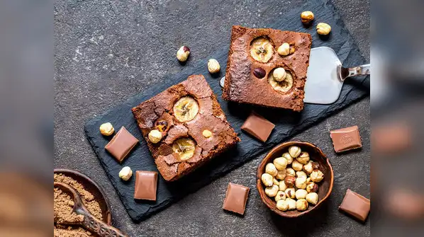
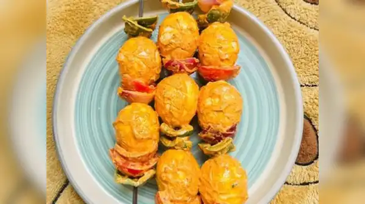
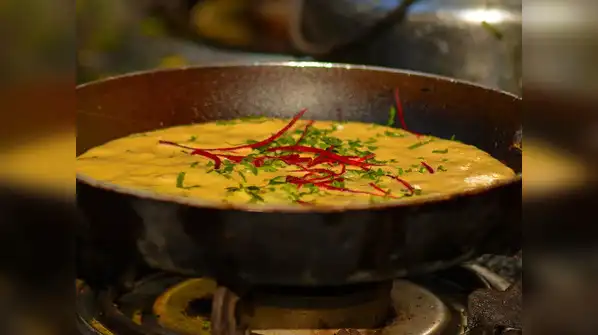
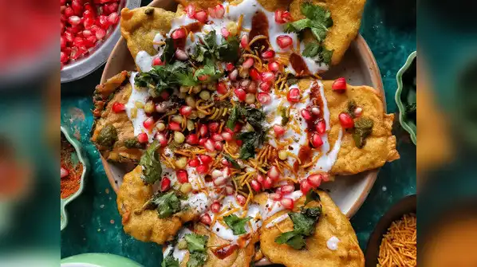
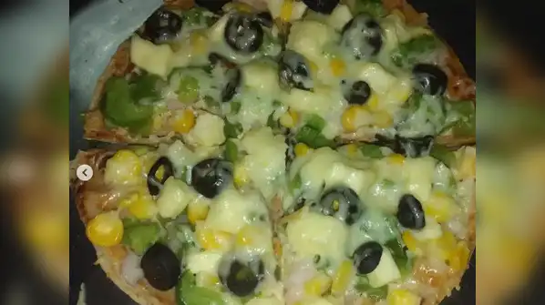

At OverNight Oats Café, we specialize in crafting delightful, wholesome sweet dishes made exclusively with overnight-soaked oats. Designed to fuel your workouts and satisfy your cravings, our offerings strike the perfect balance between nutrition and indulgence—whether you're sticking to a strict meal plan or enjoying a well-deserved cheat meal. From protein-packed oat jars to decadent, guilt-free oat desserts, every item is crafted to support your fitness goals without compromising on taste. Welcome to your go-to spot for high-protein treats and smart indulgences.
A well-earned cheat meal can boost metabolism, refill energy, and keep cravings in check—all while helping you stay committed to your fitness journey. Fuel smart, indulge right!
    
1.Banana Walnut Brownie
Can you have brownies while on diet? A 100 times yes! Diet or no diet, this special homemade banana walnut brownie recipe will make you drool. This brownie has about 25.3 gms of protein in it.
Ingredients We Use
Rolled oats- 1/2 cup (60 g)
White butter- 30 g
Banana- 3
Baking powder - 1/2 tsp
Unsweetened cocoa powder - 1 tbsp
Eggs- 2
Vanilla essence - 1 tsp
Chopped walnuts - 36 g
2.Egg Tikka
This delicious dish has about 25.2 gms of protein in it.
Ingredients We Use
Flax seeds powder - 2tsp
Kitchen king masala - 1tsp
Chia seeds - 1tsp
Red chilli powder - 1 tsp
Salt - 1tsp
Chaat masala - 1/2 tsp
Water -1/2 cup
Boiled eggs - 5
Olive oil - 1/2 tsp
3.High Protien Moonglet
This protein-rich meal also has the goodness of antioxidants from the veggies to give your day the perfect kickstart! This recipe has about 34.9 gms of protein in it.
Ingredients We Use
1 cup moong dal (250 g)
1 chopped green chilli
1 chopped tomato
1/2 thinly sliced/chopped carrot
1/2 tbsp flax seeds powder
1 chopped capsicum1/2 tbsp ghee
¼ tsp asafoetida
Salt as needed
Add vegetables of your choice.
4.Palak Patta Chat
Did you know this chaat has about 24.6 gms of protein in it? Well, it's a must-try.
Ingredients We Use
For batter
Besan - 1 cup
Turmeric - 1/4 tsp
Chilli powder - 1/2 tsp
Ajwain - 1/4 tsp
Salt - 1/4 tsp
Chaat masala - 1/4 tsp
Water - 1/2 cup
Palak leaves - 8-9
For chaat
Green chutney - 1 tsp
Curd - 2 tsp
Chaat masala - a pinch
Coriander leaves
Seed mix - 1 tsp
Pomegranate seeds - 1 tsp
Beetroot - 1/4 tsp
Ginger - 1/4 tsp
5.Roti Pizza
This pizza is loaded with protein and has about 28 gms of protein in it.
Ingredients We Use
Roti- 1
Greek yogurt- 4-5 tbsp
Tandoori masala- 1 tsp
Chaat masala- 1 tsp
Red chilli powder- 1 tsp
Salt- 1 tsp
Paneer- 100 g
Malai- 20 g
Red bell pepper- 1/2
Yellow bell pepper- 1/2
Onion- 1 small
Cherry tomato- 4
Baby corn- 4
Sweet basil- 4-6 leaves